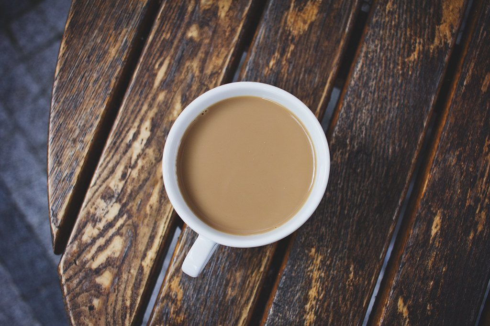
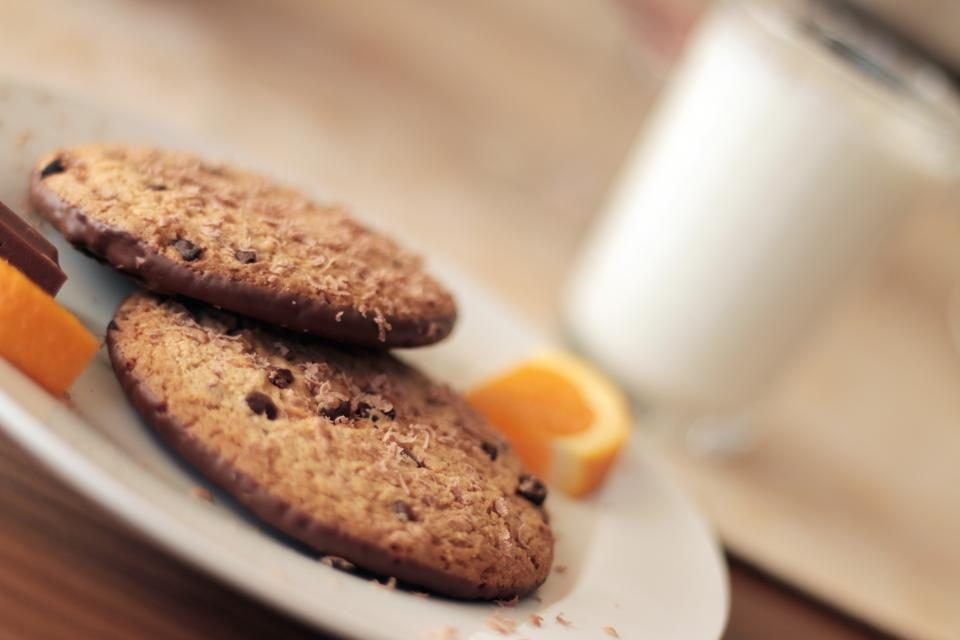

COFFEE
広島県呉市にあるカフェ「TERU COFFEE」のご案内ページです。営業時間やメニューなど、詳しいことは準備中。電話は 0823-24-7000、まずはInstagramものぞいてみてください。
制作側の連想
四文字を、四つの玉に。
「TERU」の四文字から、制作側はビリヤードの玉突きを連想しました。四つの玉に一文字ずつ。このページは、白い玉に当てて番号順に玉を落としていくイメージで、ページ番号を1〜5の玉にしています。これは制作側の連想で、お店の理念・由来とは無関係です。店名の意味や由来は分かりません。
ラック(三角形に並べた十個)
最初のブレイクで、散らばる写真たち。
写真は呉市やお店のものではありません。国外・撮影地不明のフリー素材で、お店の提供内容を示すものではないイメージです。
 1
1 2
2 3
3 4
4 5
5 6
6 7
7
8 9
9
10ご案内
お店のこと(確認できたものだけ)
| 所在地 | 〒737-0831 広島県呉市光町１１−１０−１ |
|---|---|
| 電話 | 0823-24-7000 |
| 営業時間 | 準備中 |
| 定休日 | 準備中 |
| ご予約 | 準備中 |
| 駐車場 | 準備中 |
| SNS | Instagram @teru_coffee1949 |